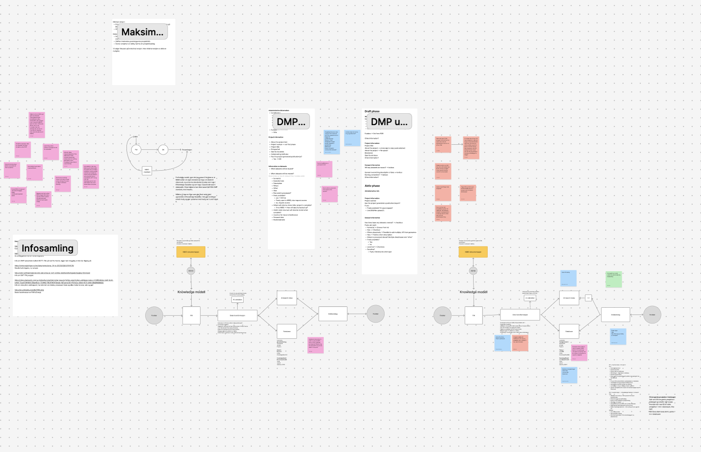
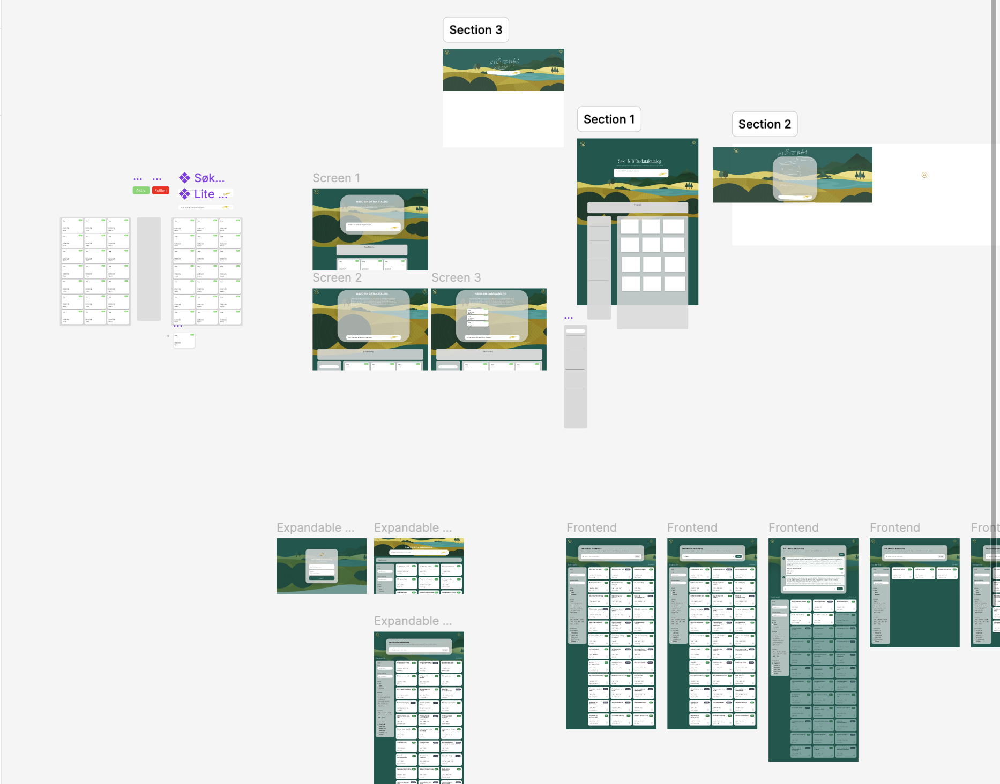

NIBIO
Hvordan kan en stor forskningsorganisasjon få bedre oversikt over egne data, uten å gi forskerne enda mer dokumentasjonsarbeid?
IT-konsulent · Sommeren 2026
- Rolle
- IT-konsulent og UX-designer
- Periode
- Sommeren 2026
- Team
- To interns
- Metoder
- Intervju, mapping, prototyping og brukertesting
Problem
Forskerne i NIBIO trengte bedre oversikt over egne data, men brukte allerede mye tid på dokumentasjon. Vanskelig terminologi og registrering av samme informasjon flere steder skapte friksjon. Utfordringen var å gjøre data lettere å finne uten å legge til mer dokumentasjonsarbeid.

Prosess
Som IT-konsulent og UX-designer i et team på to jobbet jeg fra brukerinnsikt til et testet konsept. Vi intervjuet forskere og relevante fagmiljøer, kodet funnene og kartla behov og arbeidsflyter i FigJam. Kartleggingen viste at informasjon til datakatalogen allerede ble registrert i datahåndteringsplanen, og vi bygget konseptet rundt å gjenbruke denne informasjonen.
Vi utforsket informasjonsflyten i FigJam og prototypet datakatalogen i Figma. I FAIR Wizard utformet vi spørsmål, rekkefølge og veiledning, med detaljer som bare ble vist når de var relevante. Brukertestene førte til enklere språk og justert rekkefølge. Vi anbefalte FAIR Wizard som utgangspunkt for å støtte videre drift og integrasjon.




Bilde 1 av 3
Resultat
Resultatet ble et konsept der informasjon fra datahåndteringsplanen gjenbrukes i en intern datakatalog. Tekstsøk, filtre og semantisk søk støttet ulike måter å finne data, lagringssted og kontaktperson på. Arbeidet ga meg erfaring med å forenkle komplekse arbeidsflyter og designe for både brukerbehov og organisasjonens eksisterende systemer.


Bilde 1 av 2